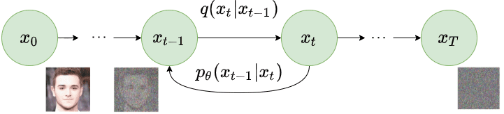

Diffusion Model——扩散模型
前言
本文主要依据引文[1]撰写，文中提到“论文”等名词时，若无特殊指明，均默认代指引文[1]。
文中的图片来自于互联网和论文，来源列举于参考资料中。
简介
扩散模型用以进行图像生成，它的过程主要分为两步：前向过程和反向过程。
前向过程是先经过一系列的步骤，为输入图像添加噪声。
反向过程则是通过训练神经网络，将含噪声图片还原回原始数据，从而我们可以利用它来生成新的图片。
前向过程
扩散模型中，前向过程的噪声添加建模为一个马尔科夫链：

初始状态$x0$代表原始图片，在马尔科夫链的状态$x{t-1}$处，我们添加一个高斯噪声，从而使其转变为状态$x_t$。
假设添加的高斯函数方差为$\betat$，条件概率$q(x_t|x{t-1})$应是一个高斯分布概率密度函数：
该分布均值为$\sqrt{1-\betat}x{t-1}$，由于$\sqrt{1-\beta_t}<1$，因此每一步都会渐弱上一步中图片的信息，让原始图片光滑地过渡到噪声；其方差为$\beta_tI$，意味着添加噪声的方差在各个通道上是相互独立的。
而在整个时间步上的后验概率为：
由于$q(xt|x{t-1})$的采样涉及上一个状态，因此计算该后验概率时需要采样$T$次，为了方便采样，可以进行重参数化。
通过引入随机性节点序列$\epsilon{0},…,\epsilon{t-2},\epsilon_{t-1} \sim N(0,I)$，加上定义：
利用高斯分布的性质，得到：
逐步递推，最终获得：
也就是说$x_t$满足这样一个高斯分布：
在这个分布中，所有的参数都可以预先计算，从而只需一次采样就可以得到任何一个时间步上的$x_t$。
反向过程

反向过程中，由于我们的目的是还原图片，因此需要得知反向的分布$p{\theta}(x{t-1}|x_t)$，直接计算难以解决，不过可以使用神经网络来学习（近似）该分布。
对于从$xt$还原到$x{t-1}$的过程，它仍然是一个高斯分布，因此只需参数化该分布的均值和方差：
从而可以得到整个序列的分布：
损失函数
扩散模型的训练目标是最大化似然对数，即$L’=E{q(x_0)}(\log[p{\theta}(x_0)])$，类似于交叉熵，论文中使用了变分下限来进行优化。
模型的$x_0$概率分布应是：
由于它并不好计算，因此在这个等式右边乘以一个值为1的项，并利用前向过程和反向过程中得到的等式，可以将其变形为：
从而：
由Jensen不等式，又有：
为了和损失函数的形式保持一致，使用负似然对数，令：
从而我们的目标转变为最小化$L$，论文规定：
$L_T$
由于论文中$\beta _t$固定为常数，因此$L_T$中并没有需要学习的参数，可以忽略。
$L_{t}$
可以证明：
由之前的重参数化技巧：
代入$\tilde{\mu}(x_t,x_0)$的表达式，整理可得：
这么做能够将参数$x0$消除，使得均值只与$x_t$相关，现在只需要用一个神经网络$\epsilon{\theta}(x_t,t)$来近似$\epsilon$即可，即：
因此$L_T$可以表达为：
论文中忽略了加权项，并说明这么做会优于目前的公式，即：
其实到这里，损失函数的目标已经变成了预测噪声。
$L_0$
$L_0$其实就是$x_1$对$x_0$的极大似然估计，论文中对每个像素都运用极大似然估计，即：
$i$代表图像中的某个像素位置，$D$代表所有维度。
对于某个像素$i$，它的分布应为：
由于$x_1$的高斯分布方差为对角阵，因此将其分解：
假设图像的通道值范围为$[0,255]$，经过归一化后到$[-1,1]$，那么有：
真实像素值是离散的，把离散值转换为连续值时，需要把每个离散值映射到一个区间，$\delta+(x_0^i)$和$\delta-(x_0^i)$对应的就是这一步。
在论文中，$L_0$使用一个单独的解码器进行学习。
训练与采样
论文中使用了一个基于Wide ResNet的U-Net来训练$L_t$，包含组归一化、自注意力模块。
其具体的训练和采样过程如下所示：
训练过程的步骤为：
- 从数据中随机抽取一个原始图片$x_0$
- 从时间步中随机抽取一个时间$t$
- 采样一个随机噪声$\epsilon$叠加到$x_0$，生成$x_t$，将$x_t$和$t$输入U-Net预测该噪声
- 利用梯度下降法更新权重
- 重复上述步骤直至收敛
采样过程的步骤为：
- 从标准正态分布采样$x_T$
- 从$t=T$到$t=1$，进行以下步骤：
- 从正态分布采样$z$（重参数化）
- 使用模型计算$x_{t-1}$
- 得到$x_0$
参考资料
[1] Ho, J., Jain, A., & Abbeel, P. (2020). Denoising diffusion probabilistic models. Advances in neural information processing systems, 33, 6840-6851.
[2] Sohl-Dickstein, J., Weiss, E., Maheswaranathan, N., & Ganguli, S. (2015, June). Deep unsupervised learning using nonequilibrium thermodynamics. In International conference on machine learning (pp. 2256-2265). PMLR.
[3] 扩散模型是如何工作的：从零开始的数学原理. HK-SHAO. https://shao.fun/blog/w/how-diffusion-models-work.html.
[4] Diffusion model(二): 训练推导详解. CSDN. https://blog.csdn.net/weixin_41978699/article/details/128604001
[5] DDPM扩散模型公式推理——损失函数. CSDN. https://blog.csdn.net/weixin_45453121/article/details/131223653.